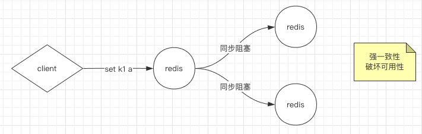
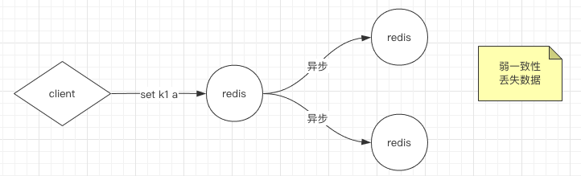
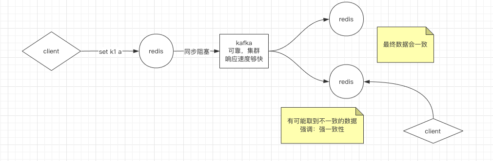

前言
主从复制，主要解决的是单点问题，从节点是主节点的备份，只读不能写，主节点可以读写。实际就是AKF原则中X轴的实现。但主从节点需要数据同步，就牵涉到数据一致性的问题，我们来看一下，集群主从集群需要注意的问题，以及redis是如何做的。
数据一致性问题
既然有从节点需要同步主节点数据，就涉及到一致性问题。
- 强一致性（线性一致性）：即复制是同步的
- 弱一致性：即复制是异步的
强一致性
所谓强一致性，以redis为例，当我们写到主节点时，主线同时去同步数据到从节点，此时主线程阻塞等待，如果一个从节点挂掉导致迟迟不能反回确认，不能同步，则导致主实例不可用，即破坏可用性。

这时候肯定是不行的，就是因为单点故障，我们引入主从集群，而因为保证强一致性导致 节点不可用，这不是又回去了吗？所以，我们是不能追求强一致性的。
弱一致性
如果，采用异步的方式，即弱一致性，又容易发生丢失数据的情况。比如，主节点刚写完，还没同步挂掉了，从节点顶上来，那么未同步的数据一定就是丢失了。

最终一致性
如果我们利用上kafka这种可靠的消息组建，并且可以非常快速的返回，同步写入kafka，然后异步的进行同步，哪怕主节点挂掉，从节点上来也可以从kafka中同步消息，不至于丢失数据。

Redis 一致性保证
下面文字引用redis中文官网
Redis 并不能保证数据的强一致性. 这意味这在实际中集群在特定的条件下可能会丢失写操作.
第一个原因是因为集群是用了异步复制. 写操作过程:
- 客户端向主节点B写入一条命令.
- 主节点B向客户端回复命令状态.
- 主节点将写操作复制给他得从节点 B1, B2 和 B3.
主节点对命令的复制工作发生在返回命令回复之后， 因为如果每次处理命令请求都需要等待复制操作完成的话， 那么主节点处理命令请求的速度将极大地降低 —— 我们必须在性能和一致性之间做出权衡。 注意：Redis 集群可能会在将来提供同步写的方法。 Redis 集群另外一种可能会丢失命令的情况是集群出现了网络分区， 并且一个客户端与至少包括一个主节点在内的少数实例被孤立。
举个例子 假设集群包含 A 、 B 、 C 、 A1 、 B1 、 C1 六个节点， 其中 A 、B 、C 为主节点， A1 、B1 、C1 为A，B，C的从节点， 还有一个客户端 Z1 假设集群中发生网络分区，那么集群可能会分为两方，大部分的一方包含节点 A 、C 、A1 、B1 和 C1 ，小部分的一方则包含节点 B 和客户端 Z1 .
Z1仍然能够向主节点B中写入, 如果网络分区发生时间较短,那么集群将会继续正常运作,如果分区的时间足够让大部分的一方将B1选举为新的master，那么Z1写入B中得数据便丢失了.
注意， 在网络分裂出现期间， 客户端 Z1 可以向主节点 B 发送写命令的最大时间是有限制的， 这一时间限制称为节点超时时间（node timeout）， 是 Redis 集群的一个重要的配置选项：
主节点HA
我们还要思考一个问题，主从集群，如果主挂掉了，那么是不是又不可用了，这就又回到单点故障问题了。
所以需要对主节点做高可用。
监控节点个数
我们思考，我们要监控主节点挂掉之后，能快速拉起从节点转为主节点，如果人工来做这件事 ，那可靠性是大有问题，你总不能24h守在机房里吧。所以我们要用专门的监控集群，比如keep alive 之类的技术，那现在问题变成，监控节点需要几个呢？如果是1个，那这一个监控节点是不是也会出现单点问题？如果我们采用2个节点，那只有两个都回答 是死了，才能判定是死了，如果其中一个通信有问题，没法回答死了，那又没法判定是死了，又出现了 强一致性导致不可用 ，那两个只要一个判定死就死？那一个死 ，一个活 那也判定不了是死是活啊，于是我们采用3个节点，3个节点几个回答死就可以判定死了，3个？强一致性，2个呢？如果权值是一样的，2个回答死的，那从概率上讲，主节点死的概率是很大的，可以判定死。所以我们从过滤上讲，过半即可！那么，是不是越多越好，4个节点，要是3个节点都回答死 才判定死，是不是更好呢？当然会更准，但问题是，4个节点实际容忍1台监控节点发生故障，如果3个节点，2个节点判定死就死，也是容忍1个节点故障，3节点成本更低！ 而且，节点数越多，所以我们通常采用奇数节点。
Redis Sentinel
引用redis官网:
Redis 的 Sentinel 系统用于管理多个 Redis 服务器（instance）， 该系统执行以下三个任务：
- 监控（Monitoring）： Sentinel 会不断地检查你的主服务器和从服务器是否运作正常。
- 提醒（Notification）： 当被监控的某个 Redis 服务器出现问题时， Sentinel 可以通过 API 向管理员或者其他应用程序发送通知。
- 自动故障迁移（Automatic failover）： 当一个主服务器不能正常工作时， Sentinel 会开始一次自动故障迁移操作， 它会将失效主服务器的其中一个从服务器升级为新的主服务器， 并让失效主服务器的其他从服务器改为复制新的主服务器； 当客户端试图连接失效的主服务器时， 集群也会向客户端返回新主服务器的地址， 使得集群可以使用新主服务器代替失效服务器。
Redis Sentinel 是一个分布式系统， 你可以在一个架构中运行多个 Sentinel 进程（progress）， 这些进程使用流言协议（gossip protocols)来接收关于主服务器是否下线的信息， 并使用投票协议（agreement protocols）来决定是否执行自动故障迁移， 以及选择哪个从服务器作为新的主服务器。
虽然 Redis Sentinel 释出为一个单独的可执行文件 redis-sentinel ， 但实际上它只是一个运行在特殊模式下的 Redis 服务器， 你可以在启动一个普通 Redis 服务器时通过给定 –sentinel 选项来启动 Redis Sentinel 。
有关Sentinel配置可以参考官网

...
...
This is copyright.